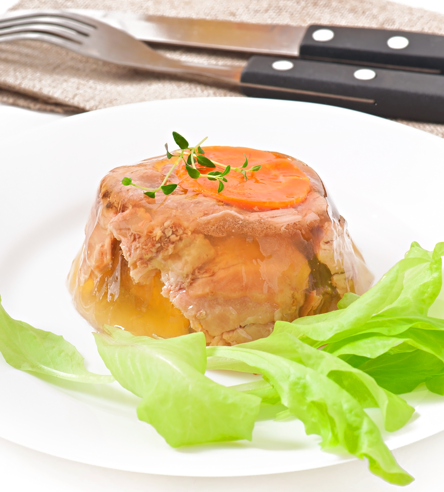

| Название блюда | Оценка (1-10) | Рецепт | Фото |
|---|---|---|---|
| Холодец | 7 | Залить мясо холодной водой, варить 6 часов, добавить специи, разлить в формы и охладить. |  |
| Борщ | 8 | Обжарить лук, морковь, свеклу, добавить бульон, капусту и картофель, варить 40 минут. | |
| Квас | 8 | Замочить сухари, добавить сахар и дрожжи, настаивать 2 дня, процедить. | |
| Шашлык | 9 | Мариновать мясо с луком и специями, жарить на углях до готовности. | |